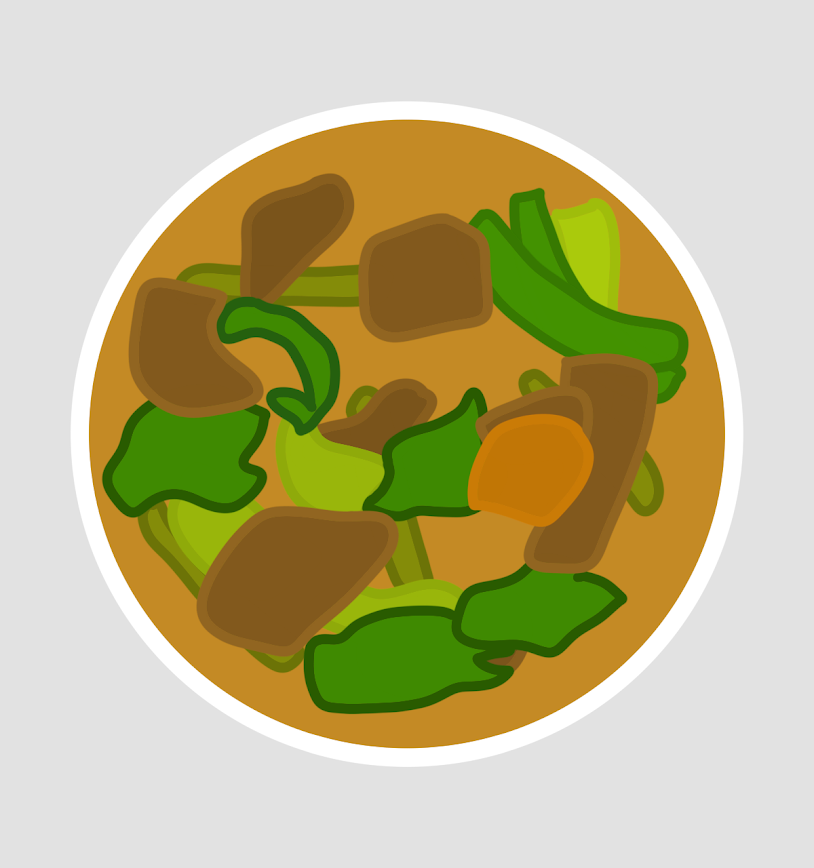

Kare-Kare
Good for 6

Ingredients
- 3 lbs oxtail (cut in 2 inch slices (or use tripe or beef slices))
- 1 piece small banana flower bud (sliced)
- 1 bundle pechay or bok choy
- 1 bundle string beans (cut into 2 inch slices)
- 4 pieces eggplants (sliced)
- 1 cup ground peanuts
- ½ cup peanut butter
- ½ cup shrimp paste
- 34 Ounces water (about 1 Liter)
- ½ cup annatto seeds (soaked in a cup of water)
- ½ cup toasted ground rice
- 1 tbsp garlic (minced)
- 1 piece onion (chopped)
- salt and pepper
Instructions
- In a large pot, bring the water to a boil
- Put in the oxtail followed by the onions and simmer for 2.5 to 3 hrs or until tender (35 minutes if using a pressure cooker)
- Once the meat is tender, add the ground peanuts, peanut butter, and coloring (water from the annatto seed mixture) and simmer for 5 to 7 minutes
- Add the toasted ground rice and simmer for 5 minutes
- On a separate pan, saute the garlic then add the banana flower, eggplant, and string beans and cook for 5 minutes
- Transfer the cooked vegetables to the large pot (where the rest of the ingredients are)
- Add salt and pepper to taste
- Serve hot with shrimp paste